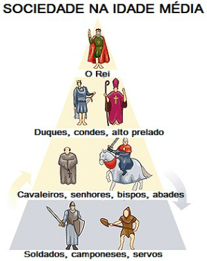
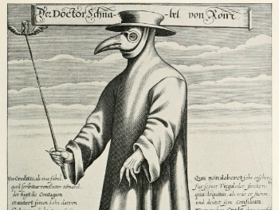
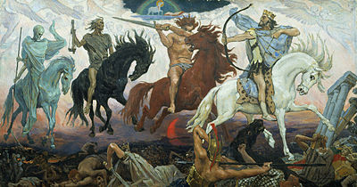

O período conhecido como Idade Média comumente é dividido pelos historiadores em duas partes: a Alta Idade Média e a
Baixa Idade Média.
Durante algum tempo esse período foi visto como sinônimo de obscuridade, recebendo inclusive a alcunha de “Idade das
Trevas”.
A Alta Idade Média foi o período inicial da Idade Média, que se estendeu da queda do Império Romano do Ocidente, em 476 d.C, até o enfraquecimento do feudalismo no início do século XI.
Por volta do século V, o Império Romano do Ocidente enfrentava grave crise, a economia havia perdido parte do seu dinamismo e a atividade econômica começou a girar cada vez mais em torno da vida agrária.
A crise favoreceu a invasão do império por diversos povos, sobretudo os de origem germânica, chamados de “povos bárbaros”, pelos romanos, por serem estrangeiros e não falarem o latim.
Os germanos formaram novos reinos dentro do território romano. A partir do século IV, se formaram reinos independentes, entre eles: os vândalos (no norte da África), ostrogodos (na península Itálica), anglo-saxões (na Britânia – atual Inglaterra), visigodos (na península Ibérica) e os francos (na Europa Central – atual França).
Os francos constituíram o reino mais poderoso da Europa Ocidental na Alta Idade Média. Carlos Magno foi o mais importante rei da dinastia Carolíngia. No século VIII, foi coroado imperador pelo papa Leão III, em Roma.
O feudalismo, estrutura econômica social, política e cultural, baseada na posse da terra, predominou na Europa Ocidental durante a Idade Média. Foi marcado pelo predomínio da vida rural e pela ausência ou redução do comércio no continente europeu.
Sociedade Feudal
A sociedade no feudalismo era chamada de sociedade estamental porque era composta por camadas sociais estanques.
Não existia mobilidade social, ou seja, passar de um estamento social para outro era praticamente impossível (se você nascesse rico, morreria rico, se nascesse pobre, morreria pobre).

A sociedade feudal baseava-se na existência de três estamentos sociais: nobreza, clero e servos.
Nobreza
A nobreza era proprietária de terras e também chamada de senhores feudais. Este exercia poder absoluto em seus domínios, aplicava as leis, concedia privilégios, administrava a justiça, declarava a guerra e fazia a paz.
Clero
A Igreja se tornou a mais poderosa instituição feudal, pois era proprietária de vastas extensões de terra.
Segundo ela, cada membro da sociedade tinha uma função a cumprir em sua passagem pela terra. A função do nobre era proteger militarmente a sociedade, a do clero rezar e do servo devia trabalhar.
Servos
O trabalho na sociedade feudal estava fundamentado na servidão. Os trabalhadores estavam presos a terra e subordinados a uma série de obrigações desde impostos e serviços.
Além dos servos, haviam outros trabalhadores como:
os vilões, homens livres que moravam na vila, prestavam serviços ao senhor feudal e podiam trocar de propriedade;
os escravos, em geral eram empregados no serviço doméstico e praticamente não tinham direitos;
os ministeriais, ocupavam a administração da propriedade feudal e podiam ascender socialmente, chegando à condição membros da pequena nobreza.
A sociedade feudal baseava-se na existência de dois grupos sociais: senhores e servos.
Senhores: nobreza e clero.
Servos: camponeses e demais.
As condições de vida nos domínios feudais eram rudes. Mesmo as camadas dos senhores não viviam luxuosamente.
A vida dos servos era miserável em todos os sentidos. Os servos e os senhores não sabiam ler nem escrever. O clero era a única classe social que tinha acesso ao estudo.
Baseada numa economia agrária e autossuficiente, ou seja, produziam tudo o que necessitavam, a economia feudal esteve dedicada ao consumo local e não às trocas comerciais.
Nesse caso, as trocas de mercadorias (ou escambo) eram realizadas através de produtos cultivados nos feudos, visto que não existia um sistema monetário (moeda).
A agricultura era a principal atividade desenvolvida no feudalismo, ainda que o artesanato fosse marcante. O artesanato servia para a produção de ferramentas e matérias de uso doméstico.
Vale lembrar que o sistema social desse período esteve marcado por uma sociedade estamental (dividida em estamentos) que não possuía mobilidade social, ou seja, nasceu servo, morrerá servo. Assim, faziam parte da estrutura feudal quatro grupos: reis, clero, nobres, servos.
Esse último grupo (servos) eram os que trabalhavam nas terras (agricultura, pecuária, nos castelos, etc.) senhoriais em troca de habitação, comida e proteção.
Eles cultivavam os produtos, cuidavam dos animais, serviam os senhores em seus castelos, seja lavar ou fazer a comida.
Além de fazerem a maior parte do trabalho que girava a economia feudal, os servos pagavam diversos tributos (ou impostos), sendo que os mais importantes eram:
Corveia: representava o cultivo das terras senhoriais que devia ser realizada pelos servos pelo menos 2 vezes por semana.
Talha: imposto em que os servos estavam obrigados a entregar cerca de metade de sua produção ao senhor feudal.
Capitação: significava o imposto pago pelos servos aos senhores feudais, relativos ao número de pessoa, ou seja, por cabeça.
Banalidade: imposto pago pela utilização dos equipamentos e instalações, ou seja, o servo pagava uma taxa ao senhor feudal para usar o moinho, o forno, etc.
A política no feudalismo estava restrita e monopolizada pelo senhor feudal. Era ele quem formava os exércitos particulares e construíam castelos fortificados, dentro e em torno do qual se desenvolvia a comunidade feudal, protegida por ele.
À medida que novos reinos foram se formando, os grandes proprietários rurais conquistaram mais autonomia. O rei lhe concedia diversas imunidades, como isenção fiscal e jurídica, o que acentuava o processo.
A Europa começou a povoar-se de castelos fortificados após a invasão dos povos nórdicos acentuando a tendência para a formação dos feudos.
O feudo era uma grande propriedade rural que abrigava o castelo fortificado, as aldeias, as terras para cultivo, os pastos e os bosques.
Os feudos podiam se obtidos da seguinte forma:
• concessão do rei ou de um grande senhor feudal: para compensar os serviços de um nobre ou de um cavaleiro destacado e assim conseguir a vassalagem desta família;
• casamentos: uma forma de garantir que os senhores feudais continuassem a ser fiéis entre si era casar os filhos, a fim de que a terra continuasse nas mãos da mesma família;
• guerras: quando os laços de vassalagem eram rompidos, ou uma família não tinha herdeiros, ou mesmo por desejar expandir suas terras, era comum fazer guerras que implicassem na conquista de mais território.
A Igreja Medieval (ou a Igreja na Idade Média) teve importante papel do século V ao XV.
A influência da religião era imensa não só no plano espiritual (poder religioso) como também no domínio material, ao se transformar na maior proprietária de terras, numa época em que essa era a principal fonte de riqueza e poder político.
A Igreja se tornou a mais poderosa instituição feudal, foi acumulando bens móveis e imóveis por meio de doações feitas por ricos aristocratas que se convertiam e por alguns imperadores.
No mundo feudal, em que a sociedade se organizava numa base militar, e onde as maiores qualidades para as classes dirigentes eram as virtudes guerreiras uma das grandes funções da Igreja foi lutar para preservar a ordem e a paz.
Instituiu a Trégua de Deus, ou seja, a proibição de combater durante certos dias do mês e nas principais datas religiosas.
A Igreja medieval tinha também a função da administração da justiça em uma série de casos, onde tinha jurisdição e competência exclusiva. Julgava baseada no Direito Canônico, regulando assim inúmeras relações e instituições sociais segundo suas leis.
A fé, era a força dominante na vida do homem medieval, inspirava e determinava os mínimos atos da vida cotidiana.
Os padrões éticos eram exclusivamente cristãos, e o medo do castigo depois da morte é que regulava a conduta dos pecadores.
O inferno, com seus tormentos, agia sobre a imaginação medieval e seus medos impediam o homem de pecar.
No início a organização clerical era simples. Cada comunidade cristã possuía um bispo, eleito pelos fiéis, os padres, responsáveis pelo ensino da religião e pelas cerimônias, e os diáconos, responsáveis pela administração e assistência à população.
Na Idade Média os padres dirigiam as paróquias, que eram pequenos distritos. As várias paróquias formavam uma diocese, dirigida por um bispo.
Várias dioceses formavam uma arquidiocese, dirigida por um arcebispo. No topo da hierarquia estava o papa, chefe da Igreja, sucessor de São Pedro, fundador da Igreja católica.
A vida monástica (vida dos mosteiros) e as ordens religiosas começaram a surgir na Europa a partir de 529 (século VI), quando São Bento de Núrsia fundou um mosteiro no Monte Cassino, na Itália, e criou a Ordem dos Beneditinos, dando origem ao clero regular, ou seja, ao clero dos mosteiros, onde os monges levavam uma vida disciplinada pelo trabalho e obrigados a obedecer às regras (regula, em latim) da ordem a que pertenciam.
De acordo com as regras de São Bento, os monges beneditinos faziam voto de pobreza, obediência e castidade. Deviam trabalhar e orar algumas horas por dia e se ocupar com os pobres, os doentes e com o ensino.
Essas regras serviram de modelo para outras ordens religiosas surgidas na Idade Média, como a Ordem dos Franciscanos, criadas por São Francisco de Assis e a Ordem dos Dominicanos, criada por São Domingos de Gusmão.
A Igreja medieval tinha praticamente o controle do saber. O domínio da leitura e da escrita era exclusivo dos padres, bispos, abades e monges.
Nos mosteiros e abadias encontravam-se as únicas escolas e bibliotecas da época. Foram os principais responsáveis pela preservação da cultura greco-romana, com a restauração e conservação de textos antigos e se dedicavam a escrever livros religiosos em latim, a língua oficial da Igreja.
Em 756 (século VIII) a Igreja constituiu seu próprio Estado, no centro da península Itálica, quando Pepino, o Breve, rei dos francos, doou ao papado uma grande extensão de terra, passando para a administração direta da Igreja, sob o nome de Patrimônio de São Pedro, território que constituiu o embrião do atual Vaticano.
As Heresias e a Inquisição
As heresias eram as seitas, facções ou orientações contrárias aos dogmas da Igreja. Em vários momentos da Idade Média, grupos de fiéis contestavam os dogmas, sendo taxados de hereges pelo clero.
Entre as diferentes heresias estavam a dos valdenses e a dos albigenses, ambas surgidas no século XII. Os valdenses pregavam que, para salvar a alma, o fiel não precisava de padres.
Os albigenses acreditavam em um Deus do bem, criador das almas, e um Deus do mal, que havia encerrado as almas no corpo humano para fazê-lo sofrer.
Com base nesses princípios eles estimulavam o suicídio e eram contra o casamento, para evitar a procriação.
A Igreja empreendeu verdadeira guerra contra os hereges. Ainda no século XIII ela criou a Inquisição, também chamada Tribunal do Santo Ofício, para investigar, julgar e condenar os hereges.
A Inquisição foi responsável pela morte de milhares de judeus, árabes e cristãos considerados hereges.
O Império Romano do Oriente, com capital em Constantinopla, fundada por Constantino em 330, inicialmente chamada de Nova Roma, atingiu o máximo esplendor no governo de Justiniano (527-565) e conseguiu atravessar toda a Idade Média, como um dos estados mais poderosos do Mediterrâneo.
No poder, Justiniano procurou organizar as leis do Império. Encarregou uma comissão para elaborar o Digestor, uma espécie de manual de Direito destinado aos principiantes.
Publicado em 533, esse manual reunia as leis redigidas por grandes juristas. Foram publicadas também as Institutas, com os princípios fundamentais do Direito Romano, e no ano seguinte, foi concluído o código Justiniano.
O sistema feudal estava completo nos séculos IX e X, com a invasão dos árabes no Sul da Europa, dos vikings (normandos) no norte e dos húngaros no leste.
A partir do século XI, quando se iniciaram diversas mudanças significativas na economia feudal, é que as atividades baseadas no comércio e na vida em cidades, pouco a pouco, ganhavam impulso. Essas mudanças deram início ao período chamado de Baixa Idade Média.
A Baixa Idade Média foi o segundo período da Idade Média, compreendido entre os séculos XI e XV, que correspondeu à desagregação do sistema feudal e a consequente transição para o sistema capitalista.
Com a integração dos mundos romano e germânico e a formação de novos reinos europeus, a cultura medieval atingiu seu apogeu.
O fim das invasões germânicas, ocorridas na Alta Idade Média, resultou em condições mais estáveis de vida e um crescimento gradativo da população e consequentemente o aumento do consumo e a necessidade de implementar a produção agrícola.
Nesta época, o desenvolvimento do comércio e das cidades ampliaram as fontes de renda. Assim, as relações de produção passaram a ser baseadas no trabalho livre assalariado e houve o surgimento de novas camadas sociais, como a burguesia.
O crescimento populacional foi um dos primeiros fatores responsáveis pelas mudanças no sistema feudal de produção.
À medida que crescia a população, aumentava a necessidade de ampliar a área de produção e desenvolver novas técnicas agrícolas.
Muitos senhores feudais, pretendendo enriquecer com a comercialização do excedente produzido no feudo, aumentaram, por meio de força e opressão, a exploração dos servos.
O excesso cometido pelos senhores feudais resultavam na fuga de servos de uma aldeia e em violentas revoltas camponesas.
O abandono dos feudos e as revoltas camponesas obrigaram a maioria dos senhores feudais a mudar seu comportamento em relação aos servos.
Alguns deles arrendaram as terras, enquanto outros passaram a vender a liberdade aos servos ou a expulsá-los da terra, colocando em seu lugar trabalhadores assalariados.
O processo de mudança do sistema feudal pelo sistema capitalista foi lento e gradual, acentuando-se com o renascimento comercial.
As cruzadas eram expedições de caráter religioso, econômico e militar contra os muçulmanos.Embora não tenha sido um movimento exclusivamente religioso, as cruzadas tiveram o espírito de religiosidade da cristandade europeia como fator importante de sua formação.
Isso se explica, diante de uma sociedade onde a fé superava a razão, a cultura era manipulada pela igreja e vivia-se preso à ideia do pecado e da condenação eterna, era natural que o homem buscasse a salvação da alma através de atos de fé e penitência.
Uma das penitências desejadas era fazer ao menos uma peregrinação à Palestina - a Terra Santa, o lugar onde Cristo nascera, sofrera e fora enterrado.
Objetivos das Cruzadas
• Libertar a Terra Santa conquistada pelos turcos seldjúcidas (dinastia do fundador Seldjuk), que proibiu a peregrinação ao Santo Sepulcro, em Jerusalém;
• A tentativa do papado de unir a Igreja Ocidental e a Igreja Oriental, separadas desde 1054 pelo Cisma do Oriente;
• A tentativa dos nobres europeus de se apropriarem de terras no oriente;
• A necessidade de algumas cidades comerciais europeias, principalmente italianos, interessados por entrepostos e vantagens em busca de produtos orientais e pela possibilidade de abertura do mar Mediterrâneo ao comércio;
• A explosão demográfica europeia, que gerou uma população marginal, sem emprego e sem terras, que uniu seu fervor religioso ao desejo de riqueza.
Do final do século XI à segunda metade do século XIII, houve oito cruzadas, que dirigiram sua luta contra os turcos no Oriente.
Em 1095, o papa Urbano II pronunciou um inflado discurso no Concílio de Clermont, conclamando os cristãos a ingressarem na expedição cruzadista rumo ao Oriente.
Primeira cruzada (1096-1099)
Chamada de Cruzada dos Nobres chegou a conquistar Jerusalém, onde promoveram uma matança da população muçulmana. Organizaram na região vários reinos nos moldes feudais. No século XII, os turcos reconquistaram os reinos, inclusive Jerusalém.
Segunda cruzada (1147-1149)
Foi organizada por reis e imperadores, com o objetivo de retomar Jerusalém dos turcos, mas fracassaram no seu objetivo.
Terceira cruzada (1189-1192)
Foi chamada Cruzada dos Reis, devido à participação do monarca da Inglaterra (Ricardo Coração de Leão), da França (Filipe Augusto) e do Sacro Império Romano-Germânico (Frederico Barba Roxa).
Não atingiu seus objetivos militares, mas foram estabelecidos acordos diplomáticos com os turcos que permitiram as peregrinações.
Quarta cruzada (1202-1204)
Foi chamada de Cruzada Comercial por ter sido liderada por comerciantes de Veneza. Desviada de Jerusalém, alvo religioso da investida, para Constantinopla, que acabou sendo saqueada.
Quinta, sexta, sétima e oitava cruzadas (1218-1270)
Secundárias sob todos os aspectos, não tiveram sucesso.
Do ponto de vista religioso as cruzadas fracassaram, do ponto de vista econômico elas tiveram um papel importante no desenvolvimento comercial, com o fim da dominação árabe no Mar Mediterrâneo.
As cruzadas conseguiram restabelecer as relações europeias com o norte da África e a Ásia. Foram responsáveis pela reabertura do Mediterrâneo ao comércio internacional e pelo desenvolvimento do comércio ocidental.
Deve-se também às cruzadas a divulgação na Europa ocidental de parte dos conhecimentos das civilizações bizantina e muçulmana, do cultivo de novos produtos agrícolas e novas técnicas, na fabricação de vidro e tapete.
O Renascimento Comercial foi uma das vertentes do Renascimento Italiano, movimento cultural, econômico e político surgido na Itália, no século XIV.
Ao lado do Renascimento Cultural e Urbano, o Renascimento Comercial foi marcado pela intensificação das relações comerciais entre as nações, pondo fim ao sistema feudal e dando início ao capitalismo comercial.
O fim do sistema feudal e o surgimento do sistema capitalista foram fundamentais para consolidar a expansão do comércio.
Entretanto, foi a partir das Cruzadas (entre os séculos XI e XIII), expedições militares de caráter econômico, político e religioso, que as relações comerciais foram fortalecidas com o Oriente.
Além disso, a abertura do Mar Mediterrâneo foi essencial para o aumento das rotas comerciais entre os países, levando ao fim do período da Idade Média e o início da Idade Moderna.
O Renascimento, aliado ao cientificismo e ao humanismo vigentes, consagraram novas formas de ver o mundo. Assim, o antropocentrismo, ou seja o homem como centro do mundo, foi substituído pelo teocentrismo medieval, onde Deus estava no centro do Universo, e a vida das pessoas giravam em torno da religião.
Para tanto, a “Idade das Trevas” (cunhada por alguns humanistas para indicar o período sombrio e estático da Idade Média), perdurou durante muito tempo na Europa, do século V ao século XV, e estava baseado numa sociedade monárquica onde o rei era o senhor mais soberano, seguido da nobreza e do clero.
Os servos, eram os últimos da estrutura hierárquica medieval, e que decerto não possuíam poder e/ou as mesmas possibilidades que os estamentos acima (nobreza e clero).
Apoiados à crise do regime feudal, os humanistas italianos alegavam que o período anterior do Medieval esteve marcado por um grande retrocesso humano, em relação às produções clássicas.
Para tanto, a ideia central desses intelectuais, artistas e pensadores humanistas eram sobretudo, a valorização do homem, na medida em que expressavam e disseminavam essa nova visão de mundo, a qual emergia aliada às transformações sociais, políticas e econômicas da Europa.
De tal modo, além da crise do sistema feudal, as grandes navegações ultramarinas do século XVI, donde Portugal foi um dos pioneiros, altera e expande a mentalidade dos homens, aliados ao cientificismo da Teoria Heliocêntrica (Sol no centro do mundo), proposta pelo matemático e astrônomo Nicolau Copérnico, em detrimento do Geocentrismo aceito pela Igreja, donde a terra era o centro do Universo.
Essa nova forma de ver o mundo, alterou significativamente a mentalidade dos homens, questionando os velhos valores num impasse desenvolvido entre a fé a razão.
Além desses fatores essenciais para a transformação da sociedade medieval, o aparecimento de uma nova classe social, denominada burguesia, consolidam o novo sistema social, econômico e político.
Nesse ínterim, os burgueses que viviam nas pequenas cidades medievais amuralhadas denominadas “burgos”, começaram a desenvolver o comércio interno, impulsionadas pelas feiras livres, locais de compra e venda de produtos diversos.
Com efeito, esse grupo de marginalizados seguiam para as cidades (burgos) em busca de melhor qualidade de vida, sendo que aqueles que se dedicaram ao comércio ambulante, foram aos poucos constituindo a nova classe social que, mais tarde, substituirá o sistema anterior, detendo os meios de produção e o acúmulo de capital: a burguesia.
Assim sendo, as feiras-livres (donde se destacam a feira de Champagne, na França, e a de Flandres, na Bélgica) foram essenciais para o desenvolvimento de atividades manufatureiras, aumento da circulação de mercadorias, o retorno das transações financeiras, o reaparecimento da moeda e formação de associações de controle de produção e comércio (Ligas Hanseáticas, Guildas Medievais e Corporações de Ofício).
Ainda que as cidades italianas de Veneza, Florença e Gênova se destacaram com a abertura do Mar Mediterrâneo, no século XV e XVI, posto que utilizaram o mar como rota marítima de comércio, sobretudo de especiarias vindas do Oriente, a expansão ultramarina tornou o mar uma nova rota comercial, substituindo, dessa maneira, o eixo comercial do Mediterrâneo para o Oceano Atlântico, com a descobertas das terras no novo mundo.
A vida urbana começou a ressurgir na Europa a partir do renascimento comercial, no século XI. Novas cidades se edificaram às margens dos rios, nos litorais e principalmente nas proximidades dos burgos fortificados, onde geralmente havia uma catedral, o palácio do bispo ou um castelo senhorial.
Fixar-se perto de um burgo significava, para os comerciantes, segurança e proteção contra salteadores (Bandidos, Ladrões).A medida que as cidades cresciam e as relações feudais se transformavam, um novo sistema econômico começou a despontar na Europa: o capitalismo.
As primeiras notícias que se tem da peste foi durante a guerra entre genoveses e mongóis na cidade de Caffa (atual Teodósia), na Península da Crimeia, em 1346.
Ao ver que os mongóis muçulmanos morriam, os genoveses atribuíam à doença à justiça divina, pois era um sinal inequívoco que Deus estaria do lado dos cristãos.
Quando a contenda acaba, os genoveses voltam para a Península Itálica levando a bordo ratos que hospedavam pulgas no seu corpo e eram elas que transmitiam a bactéria da doença.
Esses ratos entrarão em contato com seus pares europeus e assim é disseminada a doença por portos como Veneza, Marselha, Barcelona, Valência, etc.
A peste se espalhou rápida e inexoravelmente. Não havia muito que fazer, a não ser isolar o doente. Mesmo assim, o contágio atingiu e matou cidades inteiras, esvaziou mosteiros e assustou populações.
A epidemia do século XIV foi a que entrou no imaginário coletivo ocidental. No entanto, até o século XIX se verificaram surtos de peste negra pela Europa.
Durante a peste negra, as cidades contratavam médicos para que ajudassem a curar os doentes. Nem sempre estes eram habilitados ou possuíam estudos de medicina, mas eram aceitos com a esperança de que trariam a cura.Os médicos vestiam uma máscara feita de couro e com um bico que se assemelhava ao de uma ave. Dentro dele havia ervas aromáticas a fim de prevenir o contágio. Afinal, durante muito tempo se acreditava que a doença era transmitida pelo ar.Esses médicos ganhavam bastante dinheiro durante os períodos de epidemia, porém, ironicamente, nem todos sobreviviam à peste.

Os sintomas da peste negra eram parecidos aos de uma gripe muito forte. Alguns deles:
• Dores pelo corpo
• febre alta
• tosse
• aparecimento de bulbos por causa do inchaço nos gânglios
A Peste Negra matou aproximadamente 1/3 da população europeia da época, ela também faz parte dos 4 cavaleiros do apocalipse que seriam Peste, Fome, Guerra e Morte.

Os quatro cavaleiros do apocalipse